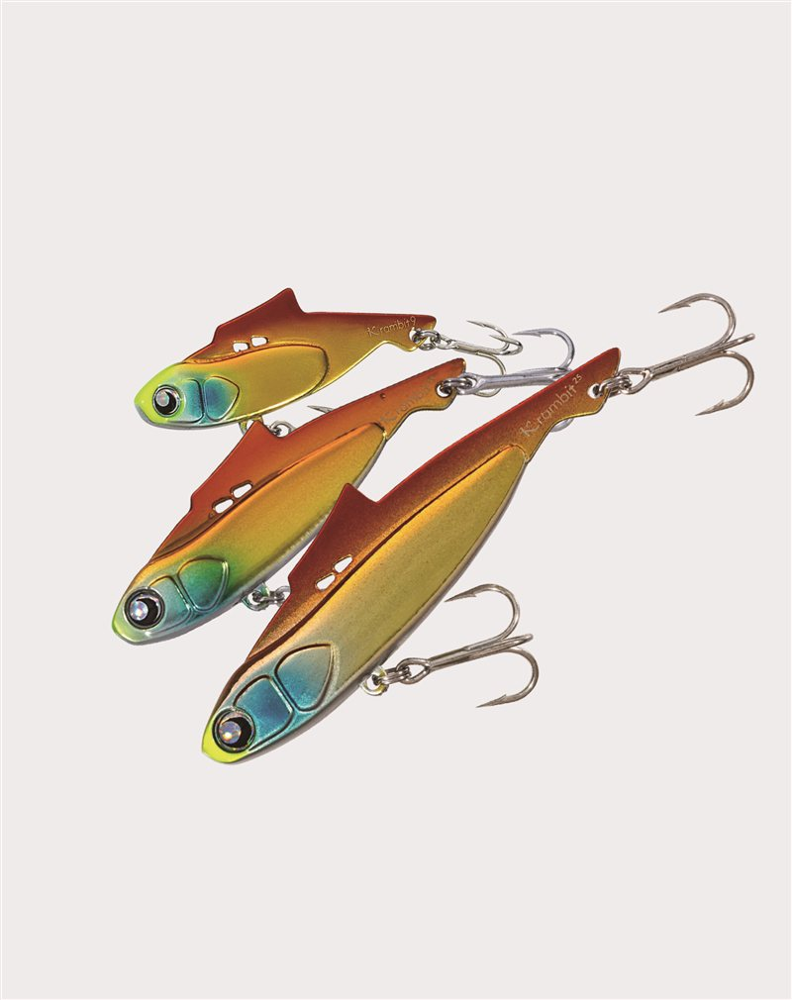
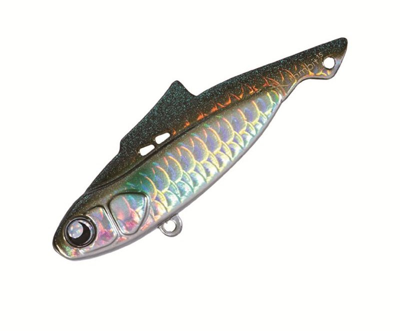
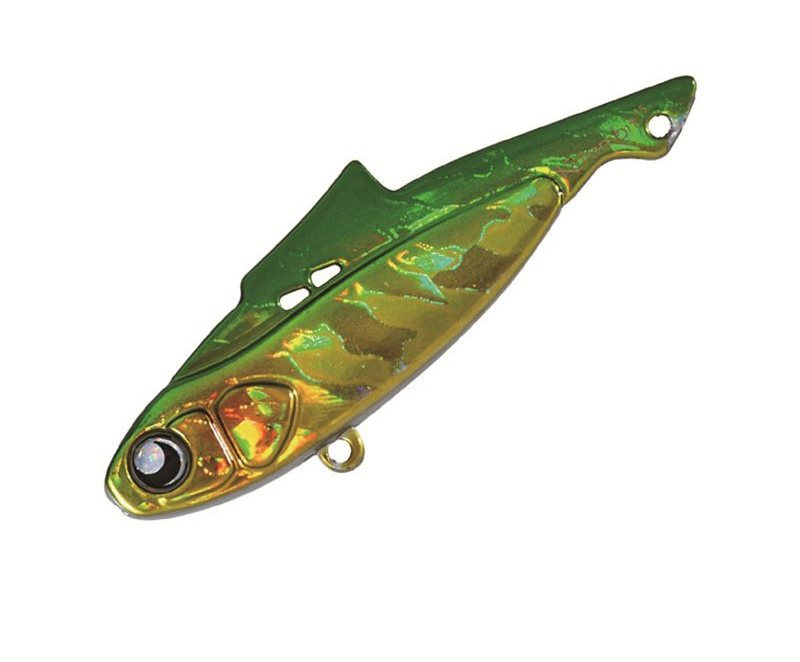
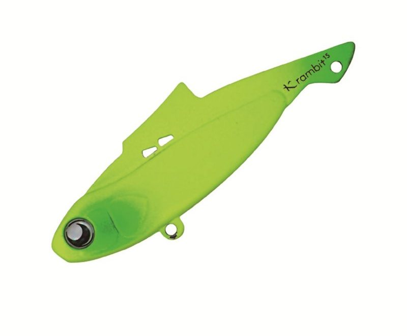
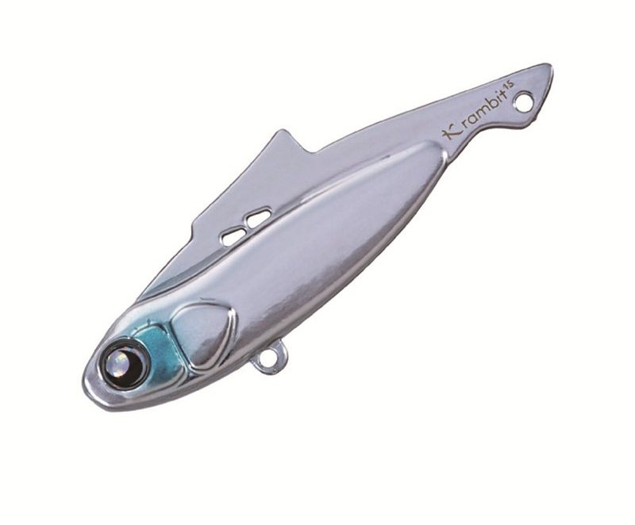

クランビット
（KRAMBIT）
クランビット（KRAMBIT）はGOTO9（ゴートゥーナイン）のメタルバイブレーションです。
「快適」「機敏」「軽快」の3つの【K】をコンセプトにしたメタルバイブで、特許技術「Snap-Loc System」でメタルバイブの永遠の課題だったテーリング（フックへの糸絡み）を解決。超薄型ボディで引き心地も軽く、長時間でも快適に使い続けられます。

画像出典:GOTO9公式HP
スペック
- メーカー
- GOTO9（ゴートゥーナイン）
- タイプ
- メタルバイブレーション
- ウェイト
- 9g／15g／25g
- 全長
- 53mm／60mm／75mm
- レンジ
- 9g：40cm〜／15g：50cm〜／25g：80cm〜
- フック／リング
- 9g：#10／#1・15g：#8／#2・25g：#6／#2
- ターゲット
- シーバス・小型回遊魚など
- 価格
- 1,375円（税込・全サイズ共通）
▼今すぐチェック
クランビットの特徴
“絡まない・よく動く・引きが軽い”。メタルバイブの悩みを3つのKで解決
-
K-1：快適（Snap-Loc Systemでテーリングを解決）
テストをクリアした特許技術「Snap-Loc System」で、メタルバイブの永遠の課題であるテーリング（フックへの糸絡み）を解決。すべてのキャストを無駄にしない。
-
K-2：機敏（立ち上がりの良いボディ）
水噛み最効率のハイ・レスポンシブ・ボディデザインで立ち上がりが良く、多彩な誘いが可能。リフト＆フォールから連続トゥイッチ、ジャーク＆フリーフォールまで、絡み防止のSnap-Loc Systemと相まってストレスなく使える。
-
K-3：軽快（超薄型ボディで軽い引き心地）
メタルバイブはプラグに比べて引き抵抗が大きく、長時間使うと体力的に辛いもの。クランビットは超薄型ボディで、従来のタイプより格段に軽い引き心地を実現している。
クランビットの使い方
基本はただ巻きとリフト＆フォール。立ち上がりが良いので、着水後すぐに巻き始めても振動が出ます。
リフト＆フォールや連続トゥイッチ、ジャーク＆フリーフォールなど、ロッドアクションを多用する誘いも得意。Snap-Loc Systemでテーリングしにくいので、フォールを多用してもトラブルを気にせず使えます。
クランビットの得意な状況
シーバスのデイゲームや、小型回遊魚を狙う港湾・河川・干潟が主な出番。
レンジを刻みながら広く探りたいときや、メタルバイブを長時間投げ続けたいときに強い1本です。重さを選べるので、水深や流れに合わせて使い分けられます。
ワンポイント
9gは2026年10月発売予定のスモールサイズで、シャローや小型ベイトのパターンに使いやすいモデル。15g・25gにも新色が追加される予定です。
レンジの目安は9gが40cmより下、15gが50cmより下、25gが80cmより下。水深に合わせて重さを選び、カウントダウンでレンジを刻むのがコツです。
クランビットのウェイトの使い分け
| モデル | 全長／自重 | 得意な場面 |
|---|---|---|
| クランビット9g | 53mm／9g | レンジ40cm〜。シャローや小型ベイトのパターンに |
| クランビット15g | 60mm／15g | レンジ50cm〜。港湾・河川のオールラウンドに |
| クランビット25g | 75mm／25g | レンジ80cm〜。深場や遠投が必要な場面に |
価格は全サイズ共通。シャローや食わせ重視なら9g、迷ったら15g、深場や飛距離重視なら25gと選び分けるとわかりやすくなります。
人気カラー
クランビットは豊富なカラーを展開（一部カラーは15g・25gのみ）。オススメのカラーを厳選して紹介します。

イナッコボラの幼魚（イナッコ）パターンに合わせやすいナチュラル系。

グリーンゴールドゴールド系のフラッシングで濁りやローライトに。

マットチャート視認性とアピールの高い定番チャート。

マイクロベイト小さなベイトを偏食しているときに合わせやすいカラー。
画像出典:GOTO9公式HP
クランビットに似ているルアー
-
 鉄PANバイブ
ジャクソン
詳細はこちら＞
鉄PANバイブ
ジャクソン
詳細はこちら＞
9〜26gのメタルバイブレーション。重さの展開が近く、遠投性・レスポンス・強波動で広く探れる定番。
-
 カンナ15（CANNA15）
ポップシークルー
詳細はこちら＞
カンナ15（CANNA15）
ポップシークルー
詳細はこちら＞
全長58mm・自重15gの小型バイブレーション。港湾・河川のシャローで、クランビット15gと選択肢が重なる。
-
 ビットブイ26
アピア
詳細はこちら＞
ビットブイ26
アピア
詳細はこちら＞
全長55mm・自重26gのヘヴィコンパクトバイブ。クランビット25gと同じクラスで、さらに飛距離を出したいときに。